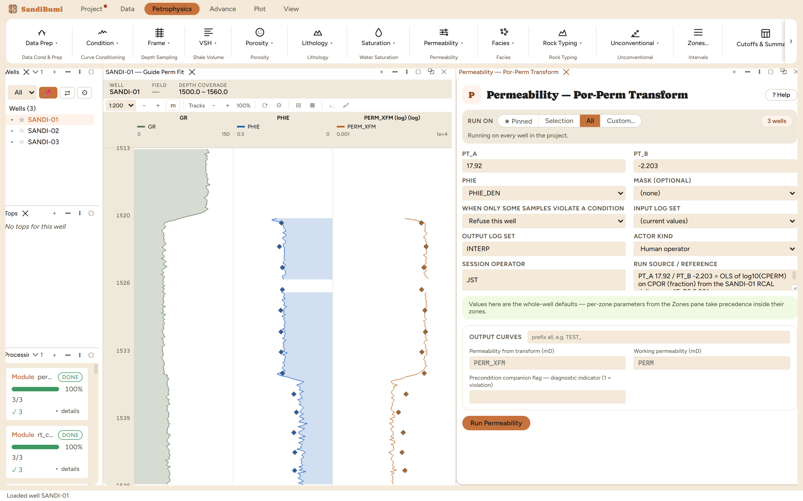
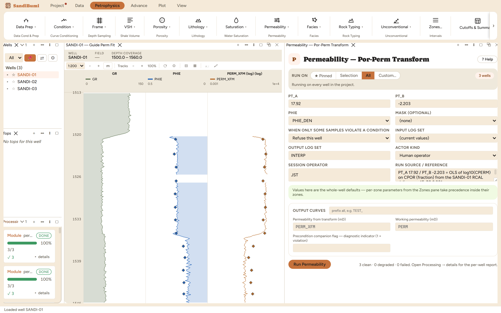
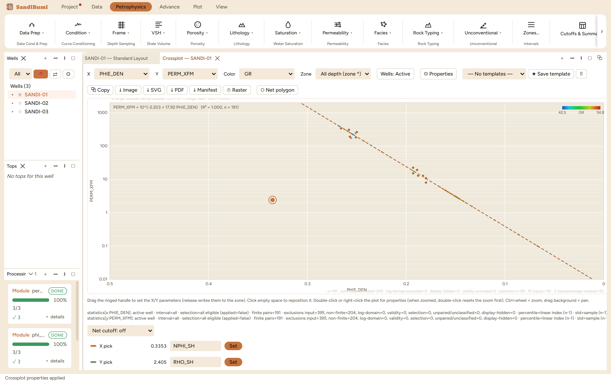

The por-perm law you fit yourself: a straight line in log10(k) against porosity, with both coefficients coming from your own core. Where plugs exist this replaces every published-constant family on the shelf, because it is calibrated to this rock instead of to a 1950s chart, and the two chapters before this one measured what that difference is worth: factors of three to four.
log10(PERM) = PT_A · PHIE + PT_B [mD]
One decade of permeability per 1/PT_A of porosity. The form is the classic semilog core regression; the physics is empirical, which is the point: the coefficients carry whatever pore-system behaviour the plugs actually measured, and nothing else.
No coefficients ship, because a transform fitted in another field is a smooth, plausible, wrong answer here. With porosity picked and the coefficients empty:
precondition 'PT_A' failed before perm_transform ran: value NaN at sample 0 is not finite. Fix the supplied value or its zone override.

3 clean. Run live: median PERM_XFM 286.25 mD in the gas sand, 3.24 mD in the wet sand, 5.16 over the section: an order of magnitude and more below the published-constant families, and the number that carries the core's authority.
Then the cross-check, and the honest surprise. Against the very plugs the line was fitted on, the log-side transform reads a geometric factor of 0.484: half the plug permeability, with a spread of 2.36. The line did not move; the porosity did. The fit ran on plug porosity CPOR, but the log runs on PHIE_DEN, and at the plug depths the median difference CPOR − PHIE_DEN is +0.0144. Multiply by the slope: 17.92 × 0.0144 is 0.26 decades, a factor of 1.8, and the by-well ratios (0.538, 0.516, 0.398) all sit on the same side. A transform is fitted on one porosity and run on another at your peril: either fit against the log porosity at plug depths, or accept and state the pairing bias.
SELECT COUNT(*), round(median(c.cpor - l.value), 4) FROM core_data c JOIN core_sets cs ON cs.well_id = c.well_id AND cs.set_name = c.set_name AND cs.active JOIN computed_curves l ON l.well_id = c.well_id AND abs(l.depth - c.depth) < 0.08 WHERE l.curve_name = 'PHIE_DEN' AND NOT isnan(l.value)

The crossplot closes the loop. PHIE_DEN against PERM_XFM with a log Y axis, core plugs as diamonds and an exponential regression gives back PERM_XFM = 10^(−2.203 + 17.92·PHIE_DEN) with R² = 1.000: the fit recovers exactly the coefficients the module was given, because a transform output plotted against its own input is not data, it is the equation drawn twice. The information in the picture is the diamonds: the real plugs scatter off the line, and their offset is the pairing bias just measured.
